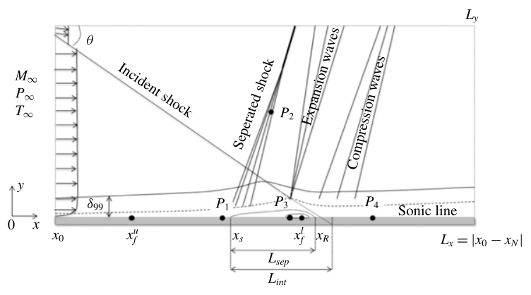
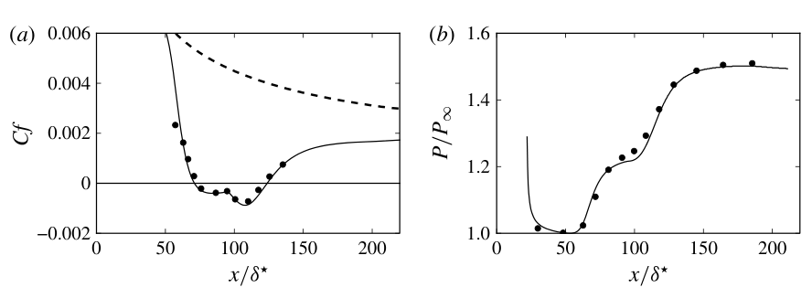
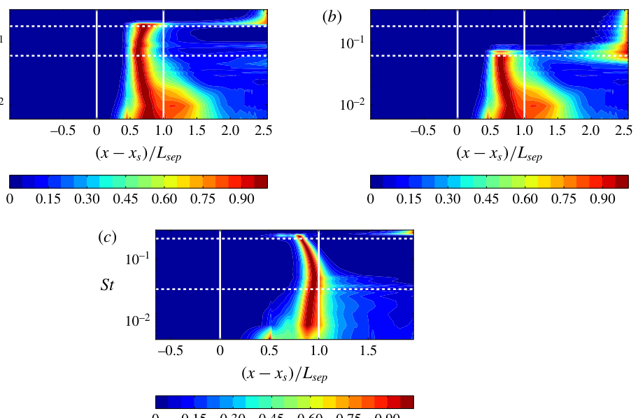
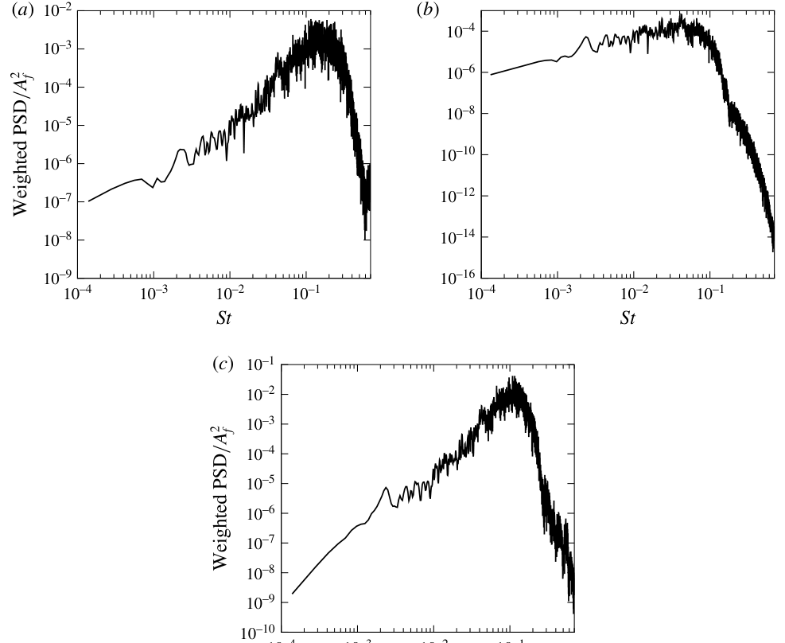

01中文摘要
对平板层流边界层与斜激波的干扰进行数值模拟和全局线性稳定性分析。在所选取的自由来流马赫数、雷诺数和激波角范围内，边界层因逆压梯度分离，但干扰整体全局稳定。二维大尺度结构源于选择性噪声放大，每个频率由若干全局模态组成的波包序列描述。低频谱结构位于分离激波附近并向马赫波辐射，以干扰长度标度；中频谱结构位于剪切层，以撞击点位移厚度标度。全局resolvent表明非定常性主要来自剪切层不稳定；中等强迫幅值下非线性会显著放大低频。
原始摘要（英文/原文）
The interaction of an oblique shock wave and a laminar boundary layer developing over a flat plate is investigated by means of numerical simulation and global linear-stability analysis. Under the selected flow conditions (free-stream Mach numbers, Reynolds numbers and shock-wave angles), the incoming boundary layer undergoes separation due to the adverse pressure gradient. For a wide range of flow parameters, the oblique shock wave/boundary-layer interaction (OSWBLI) is seen to be globally stable. We show that the onset of two-dimensional large-scale structures is generated by selective noise amplification that is described for each frequency, in a linear framework, by wave-packet trains composed of several global modes. A detailed analysis of both the eigenspectrum and eigenfunctions gives some insight into the relationship between spatial scales (shape and localization) and frequencies. In particular, OSWBLI exhibits a universal behaviour. The lowest frequencies correspond to structures mainly located near the separated shock that emit radiation in the form of Mach waves and are scaled by the interaction length. The medium frequencies are associated with structures mainly localized in the shear layer and are scaled by the displacement thickness at the impact. The linear process by which OSWBLI selects frequencies is analysed by means of the global resolvent. It shows that unsteadiness are mainly associated with instabilities arising from the shear layer. For the lower frequency range, there is no particular selectivity in a linear framework. Two-dimensional numerical simulations show that the linear behaviour is modified for moderate forcing amplitudes by nonlinear mechanisms leading to a significant amplification of low frequencies. Finally, based on the present results, we draw some hypotheses concerning the onset of unsteadiness observed in shock wave/turbulent boundary-layer interactions.
02阅读说明
数值+理论论文（二维基流、全局线性稳定性、全局预解、白噪声强迫的线性/非线性N-S），JFM 2016年789卷，全文35页；图1-25、表1-3清晰，表4排版错乱（仅采用正文可确认的强迫/探头设置）；公式经原PDF第6、7、9、15、20页核对。信息完整度高。 文章类型：期刊
03一句话核心与三句话摘要
斜激波/层流边界层干扰全局稳定、呈选择性噪声放大：低频随分离激波、中频随剪切层。
- 层流/转捩斜激波-边界层干扰的全局稳定性研究很少，Priebe & Martin提出的“低频为全局不稳定模态”假设尚未被证明（第3页）。 原文明确
- 作者对M∞=2.10-3.00、Reδ*=1010-2700、θ=22.2°-32°的7个二维工况计算基流，做全局线性稳定性、全局预解和白噪声强迫响应；所有特征值实部为负，流动全局稳定，扰动以波包形式被选择性放大（第1、14页）。 AI概括
- 低频结构贴近分离激波、按干扰长度Lint缩放并辐射马赫波，中频结构位于剪切层、按冲击处排移厚度δ*缩放；非线性使低频响应增强，作者据此推断湍流SWBLI低频非定常可能源于剪切层模态的非线性相互作用（第17-19、26-29页）。 AI概括
04核心内容清单
| 要点 | 类型 | 重要性 | 原文依据 | 属性 |
|---|---|---|---|---|
| 所有工况的所有全局模态增长率均为负，OSWBLI在给定参数范围内全局稳定 | 核心结论 | A | 第14页 §4.2.2、图8 | 原文明确 |
| 脉冲扰动演化为沿剪切层向下游增长的波包，体现噪声放大器而非振荡器行为 | 机理 | A | 第12-14页 §4.2.1、图5-7 | 原文明确 |
| 全局谱分为四族：超声速KH、亚声速KH、边界层模态、声模态 | 分类 | A | 第14-17页 图8-9 | 原文明确 |
| 低频（I类）结构按干扰长度Lint缩放，I与II/III的分界为St×Lint/δ*≈2.8 | 缩放律 | A | 第17页 §4.2.3、图12 | 原文明确 |
| 中频（II/III类）按冲击处排移厚度δ*缩放，II类最弱阻尼模态St≈0.145 | 缩放律 | A | 第17-18页 图12-13 | 原文明确 |
| I类能量集中于分离区，II类集中于再附点附近，III类在气泡下游附着区放大 | 空间局域化 | A | 第19页 图14 | 原文明确 |
| 全局预解在St≈0.145达峰，θ由30.8°增至32°峰位不变 | 定量结果 | A | 第25页 图19 | 原文明确 |
| 上游白噪声强迫在St∈[0.05,0.5]产生宽带选择性放大，分离激波处呈低通响应 | 接收性 | A | 第22-23页 图15-16 | 原文明确 |
| 非线性使低频响应增强，St=0.02模态局域于回流区且无声辐射 | 非线性 | B | 第26-27页 图20-22 | 原文明确 |
| θ=32.5°时壁面摩阻变正，二维定常平衡态的上限约为θ=32° | 参数边界 | B | 第11-12页 §4.1、图4 | 原文明确 |
| 数值谱对St>0.16的高频收敛慢，伪谱显示特征值对扰动高度敏感 | 数值方法 | B | 第30页 附录A.1、图23-24 | 原文明确 |
| 层流与湍流剪切层动力学的St_Lint相差约一个量级（5对0.5），δ*相差约5倍 | 对比 | C | 第29页 §5 | 原文明确 |
05引言：研究问题与领域缺口
湍流SWBLI普遍存在低频非定常（分离激波在St_Lint≈0.03附近自持振荡），其机理存在多种假说：上游大尺度结构、下游回流区影响、入射激波与分离激波之间的声反馈环、剪切层/回流区质量平衡（Piponniau等）、分离激波对白噪声的低通滤波（Touber & Sandham）。层流或转捩SWBLI的全局稳定性研究很少：局部稳定性方法只能覆盖中高频，低频动力学需要全局方法；Robinet(2007)只分析了三维定常全局不稳定，Priebe & Martin(2012)猜测低频是全局不稳定模态但未被证明。本文以Degrez等(1987)构型为起点，研究斜激波与平板层流边界层的二维干扰，目标是判断其全局稳定性、识别模态族、建立频率-空间尺度缩放，并用全局预解和强迫响应解释频率选择（第2-4页）。
06流动条件与几何构型
| 项目 | 数值/描述 | 依据 | 备注 |
|---|---|---|---|
| 算例A（Degrez构型） | M∞=2.15；θ=30.8°（气流偏转角β=3.81°）；δ*=8.4×10⁻⁴ m；Reδ*=1050；Lint/δ*=36.7；Lsep/δ*=68；Lsep/H=35.77 | 第5页表1、第10页表3 | |
| 算例B | M∞=2.15；θ=31.4°；β文中未提及；δ*=8.4×10⁻⁴ m；Reδ*=1050；Lint/δ*=50.4；Lsep/δ*=92；Lsep/H=30.00 | 第10页表3 | |
| 算例C | M∞=2.15；θ=32.0°；β文中未提及；δ*=8.4×10⁻⁴ m；Reδ*=1050；Lint/δ*=64.1；Lsep/δ*=108；Lsep/H=25.98 | 第10页表3 | |
| 算例D | M∞=2.10；θ=30.8°；β文中未提及；δ*=8.0×10⁻⁴ m；Reδ*=1010；Lint/δ*=19.9；Lsep/δ*=37；Lsep/H=46.34 | 第10页表3 | |
| 算例E | M∞=2.20；θ=30.8°；β文中未提及；δ*=8.7×10⁻⁴ m；Reδ*=1090；Lint/δ*=53.6；Lsep/δ*=93；Lsep/H=29.34 | 第10页表3 | |
| 算例F | M∞=2.15；θ=30.8°；β文中未提及；δ*=1.56×10⁻³ m；Reδ*=1950；Lint/δ*=70.1；Lsep/δ*=109；Lsep/H=36.08 | 第10页表3 | |
| 算例G | M∞=3.00；θ=22.2°；β文中未提及；δ*=2.15×10⁻³ m；Reδ*=2700；Lint/δ*=25.0；Lsep/δ*=62；Lsep/H=23.00 | 第10页表3 | |
| 来流总条件 | Ti,∞=287 K；Pi,∞=1.07×10⁴ Pa | 第5页表1 | |
| 气体与输运性质 | γ=1.4；Pr=0.72；Sutherland常数Ts=110.4 K；量热完全气体 | 第6页 §2.2 | |
| 壁面与边界条件 | 无滑移、绝热壁；入口给定二维定常N-S解；顶部用R-H关系施加斜激波；出口/上边界用特征法减小反射 | 第7-8页 §3.1 | |
| 计算域与网格 | x/δ*∈[0,400]，y/δ*∈[0,80]；Nx×Ny=560×100；另用650×100和900×200验证 | 第10页 §4.1、第29-30页附录A.1 | |
| 扰动维数 | 基流与扰动均为二维；三维扰动未计算 | 第4页 §1、第29页 §5 |
07核心现象与关键参数
| 参数 | 定义 | 数值 | 关系/说明 | 依据 |
|---|---|---|---|---|
| St | 基于δ*与Ue的Strouhal数 | St=(ωδ*/Ue)/2π | 谱图横轴 | 第14页 §4.2.2 |
| St×Lint/δ* | 基于干扰长度的无量纲频率 | I类与II/III类的分界≈2.8 | 低频按Lint缩放 | 第17页 §4.2.3、图12 |
| St（II类） | 中频最强选择性频率 | ≈0.145；预解峰值同在此处 | 按δ*缩放 | 第17、25页 图12、图19 |
| Mr,i | 剪切层上/下侧相对相速度（相对马赫数） | Mr<1为亚声速KH，Mr>1为超声速KH | Mr,i=|ω/αr−Ui|/ai | 第15页 式(4.1) |
| αr | 附着于剪切层的曲线坐标s方向的波数 | 由特征模态相位求得 | αr=dφ/ds | 第15页 式(4.2) |
| Lint/δ* | 干扰长度与冲击处排移厚度之比 | A-G分别为36.7/50.4/64.1/19.9/53.6/70.1/25.0 | 低频缩放尺度 | 第10页 表3 |
| Lsep/H | 分离长度Lsep与H之比（H的定义文中未说明） | A-G分别为35.77/30.00/25.98/46.34/29.34/36.08/23.00 | 表征分离区相对尺度 | 第10页 表3 |
| 选择性频带 | 线性响应被放大的频率范围 | St∈[0.05,0.5]；低频St∈[5×10⁻⁴,0.05] | 上游强迫/非线性低频 | 第22页 §4.3、第28页 §5 |
| St_Lint（层流/湍流） | 剪切层动力学的无量纲频率 | 层流≈5，湍流≈0.5 | 对比湍流SWBLI | 第29页 §5 |
| θ临界 | 二维定常平衡态可维持的最大入射激波角 | ≈32.5°时摩阻变正，谱分析限于θ≤32° | 二维性判据 | 第11-12页 §4.1、图4 |
08方法与数据
控制方程为二维可压缩N-S方程（式2.1-2.4）：理想气体、Newtonian流体、Sutherland黏性（Ts=110.4 K）、γ=1.4、Pr=0.72，以激波后Ue和冲击处δ*无量纲。基流用PHOENIX有限体积程序：Roe通量分裂、MUSCL三阶、黏性项中心差分、双时间步；壁面无滑移绝热，顶部用Rankine-Hugoniot关系施加斜激波，出口与上边界用特征法，入口给定二维定常N-S解。线性化后得∂q'/∂t=Jq'（式2.7-2.8），用时间步进算子M=exp(JΔt)的Krylov-Arnoldi方法求Ritz对（式3.2-3.4），参数Δt=1.5×10⁻⁷、CFL=1、Δt_s=40Δt、N_s=400、ε_ev=1×10⁻⁶（表2）。计算域[0,400]×[0,80]，网格560×100，并用650×100、900×200做谱收敛性检查（附录A.1）。全局预解R(ω)由Arnoldi的Hessenberg矩阵近似（第25页），伪谱按式(A1)。强迫采用高斯包络白噪声（式4.3），4个壁面压力探头，PSD用三段50%重叠、记录长度1000；Fourier模态由10000个快照（间隔0.148）变换，并用100个全局模态做正交投影（式4.4）。
| 项目 | 内容 | 依据 | 备注 |
|---|---|---|---|
| 控制方程 | 二维可压缩N-S，守恒形式，理想气体+Newtonian+Sutherland | 第5-6页 式(2.1)-(2.4) | |
| 无量纲化 | 长度δ*、速度Ue、时间δ*/Ue、压力ρ∞Ue² | 第6页 §2.2 | |
| 基流求解 | PHOENIX有限体积，Roe通量分裂，MUSCL三阶，黏性项中心差分，双时间步 | 第7页 §3.1 | |
| 基流边界条件 | 壁面无滑移绝热；顶部R-H斜激波；出口/上边界特征法；入口定常解 | 第7-8页 §3.1 | |
| 基流验证 | Case A与Degrez等(1987)实验/数值的摩阻与壁压对比（图3） | 第10页 §4.1、图3 | |
| 稳定性分析 | 小扰动代入得线性算子J，正则模态Jq̂=λq̂，λ=σ+iω | 第6-8页 式(2.6)-(2.9)、(3.1) | |
| 特征值算法 | 矩阵自由时间步进+Krylov子空间+Arnoldi/Gram-Schmidt，由Hessenberg矩阵Ritz对反算λ | 第8-9页 式(3.2)-(3.4) | |
| 数值参数 | Δt=1.5×10⁻⁷，CFL=1，Δt_s=40Δt，N_s=400，ε_ev=1×10⁻⁶ | 第10页 表2 | |
| 预解与伪谱 | R(ω)由Hessenberg矩阵近似；伪谱Λ_ε按式(A1)计算 | 第25页 §4.3、第30页式(A1) | |
| 强迫设置 | 高斯包络壁面法向速度白噪声（式4.3），F1位于分离点上游、F2位于回流区中心；4个压力探头P1-P4 | 第20页 §4.3、表4 | |
| 频谱估计 | PSD用三段50%重叠、记录长度1000；WPSD按强迫幅值归一化 | 第20页 §4.3 | |
| Fourier模态与投影 | 10000个快照（间隔0.148）做Fourier变换；100个全局模态正交投影（式4.4） | 第20-23页 §4.3 | |
| 非线性计算 | 同一强迫作用于全N-S方程，Af=10⁻⁸、10⁻⁴（F1）与10⁻⁶（F2） | 第25-26页 §4.4 | |
| 网格/谱收敛 | 560×100与650×100几乎一致；900×200在St>0.16有差异；预解对N_s=320/360/400不敏感 | 第29-31页 附录A.1-A.2、图23-25 |
09核心推导与公式
将二维定常基流代入可压缩N-S方程并做小扰动线性化，得到线性算子J的特征问题；用时间步进算子的Krylov-Arnoldi方法提取全局模态，再用相对相速度判别KH模态的亚声速/超声速性质，并用全局预解解释频率选择。
关键假设
- 二维基流与二维扰动，扰动无穷小，忽略非线性项
- 量热完全气体、Newtonian流体、Sutherland黏性、Pr=0.72、γ=1.4
- 壁面无滑移、绝热；入口为定常二维N-S解；顶部斜激波由R-H关系给定
- 存在定常平衡基流 R(qb)=0
- 时间步进算子与本征值按Nyquist准则对应，快照长度足以捕捉最慢频率
- 预解由Arnoldi的Hessenberg矩阵近似，特征值对扰动敏感性用伪谱描述
推导过程
以守恒变量q=[ρ,ρu,ρE]写出二维可压缩N-S方程，并用δ*、Ue、ρ∞Ue²无量纲化；黏性应力与热流分别由Newtonian关系和Fourier导热给出。
把方程组写成∂q/∂t=R(q)，基流满足R(qb)=0；基流假定为二维定常解。
将瞬时流场分解为基流与小扰动，忽略非线性项，得到以Jacobian算子J表示的线性演化方程。
线性化方程用与非线性N-S相同的Roe格式离散，得到大型常微分方程组；设正则模态解，问题化为特征值问题。
为避免显式构造Jacobian，用指数传播算子M=exp(JΔt)作用于快照，构造Krylov子空间并正交化；将M投影到低维Hessenberg矩阵求Ritz对。
对每个特征模态，在附着于剪切层的曲线坐标中求波数与相速；上、下两侧相对马赫数Mr<1为亚声速KH，Mr>1为超声速KH并可辐射马赫波。
预解R(ω)表示频率ω的谐波强迫下流场的最大响应，与全局模态的非正交性有关；伪谱给出特征值对扰动的敏感度。
在壁面施加高斯包络的白噪声法向速度，记录压力探头响应并计算WPSD；对单频Fourier模态用全局模态正交展开，判断各模态族的贡献。
适用边界：仅二维基流与二维扰动；层流、低Re（1010-2700）；Re与M不能独立变化，缩放律的M/Re依赖未定；仅Case A做强迫/非线性计算；计算域截断使高频（St>0.16）谱收敛慢，III类模态受下游边界条件影响；预解由Hessenberg矩阵近似，特征值对扰动高度敏感；低频非线性机制未辨识。
10结果：主要发现与关键证据
7个工况A-G覆盖M∞=2.10-3.00、θ=22.2°-32°、Reδ*=1010-2700（表3）；θ增大时干扰区近线性增大，θ=32.5°时摩阻系数在x/δ*≈99.2处变正，提示二维平衡态上限约为32°（图4）。所有特征值实部为负，谱分为四族：I超声速Kelvin-Helmholtz（KH）模态、II亚声速KH模态、III边界层模态、IV声模态（图8-9）。低频I类结构位于分离区/分离激波附近，按Lint缩放；II/III类按δ*缩放，I与II/III的分界为St×Lint/δ*≈2.8，II类最弱阻尼模态St≈0.145（图12-14）。全局预解在St≈0.145出现峰值，且θ从30.8°增至32°不改变峰值位置（图19）。上游白噪声强迫下，P1/P3在St∈[0.05,0.5]呈宽带放大，P2呈低通、St>0.1后衰减（图15）；内部强迫对I类低频更有效，而II类中频在分离点附近接收性更强（第24页、图16）。非线性计算中中高频响应与线性接近，低频能量随强迫幅值增强，St=0.02模态局域于回流区且无明显声辐射（图20-22）。
| 发现 | 证据 | 证据类型 | 强度 | 位置 | 属性 |
|---|---|---|---|---|---|
| 在M∞=2.10-3.00、Reδ*=1010-2700、θ=22.2°-32°范围内，OSWBLI全局稳定 | 图8（Case A）中所有特征值增长率σδ*/Ue<0；正文明确“all of the modes are temporally damped”，并称该结论对宽参数范围成立 | 全局稳定性 | 强 | 第14-15页 §4.2.2、图8 | 原文明确 |
| 脉冲扰动形成沿剪切层向下游增长的波包，随后流出计算域并松弛 | 图5-7的快照与时空图；上游锋面在激波冲击点后减速、进入附着区再加速 | 线性动力学 | 强 | 第12-14页 §4.2.1、图5-7 | 原文明确 |
| 全局谱含四族模态：超声速KH、亚声速KH、边界层模态、声模态 | 图8分区与图9典型模态；I类上游Mr>1、下游Mr<1 | 模态分类 | 强 | 第14-17页 图8-11 | 原文明确 |
| 低频I类按Lint缩放，中频II/III类按δ*缩放，分界为St×Lint/δ*≈2.8 | A-E工况谱在两种归一化下的坍缩；图12-13竖直线 | 缩放分析 | 强 | 第17-18页 §4.2.3、图12-13 | 原文明确 |
| I类能量集中于分离区，II类集中于再附点附近，III类在气泡下游附着区放大 | 沿法向积分动能随x的分布（图14a,b），C工况分离区增大后更明显（图14c） | 空间局域化 | 中 | 第19页 图14 | 原文明确 |
| 全局预解在St≈0.145达峰，θ从30.8°增至32°峰位不变 | 图19两条曲线；与线性强迫响应一致 | 频响 | 中 | 第25页 §4.3、图19 | 原文明确 |
| 上游白噪声强迫在P1/P3产生St∈[0.05,0.5]宽带放大，P2呈低通 | 图15 WPSD；P2在St>0.1后所有频率衰减 | 接收性 | 强 | 第22页 图15、第20页 §4.3 | 原文明确 |
| 非线性对中高频响应影响小，但显著增强低频，St=0.02模态局域于回流区且无声辐射 | Af=10⁻⁸与10⁻⁴的WPSD对比（图20-21）；图22压力/涡量模态 | 非线性 | 中 | 第25-27页 §4.4、图20-22 | 原文明确 |
| θ=32.5°时摩阻系数变正，二维定常平衡态上限约为32° | 图4(a)在x/δ*≈99.2处Cf>0；据此稳定性分析限于θ≤32° | 参数边界 | 中 | 第11-12页 §4.1、图4 | 原文明确 |
| 层流与湍流剪切层动力学的St_Lint相差约一个量级 | 层流St_Lint≈5，湍流≈0.5；Lint/δ*层流36.7、湍流13.2，δ*湍流/层流≈5 | 对比 | 中 | 第29页 §5 | 原文明确 |
11机制解释与论证链
前提：OSWBLI全局稳定但线性算子高度非正交，故存在非模态暂态增长。证据：所有模态σ<0（图8），脉冲扰动仍形成向下游增长的波包（图5-7），预解在St≈0.145出现峰值（图19）。推论：流动是选择性噪声放大器；频率选择性由模态的空间尺度决定——低频模态尺度为Lint、贴近分离激波，中频模态尺度为δ*、位于剪切层/再附点；I类模态相对上侧外流超声速、下侧亚声速，故向上游/远场辐射马赫波。结论：低频非定常不需要全局不稳定即可出现；非线性使能量向低频、回流区集中。以上“非正交导致暂态增长”的因果表述部分属AI概括，原文明确给出的是“selective noise amplifier”与“non-modal transient response”。
12讨论：结论、贡献与局限
四族模态的物理分工：I类波在剪切层下侧相对亚声速、上侧相对超声速，向下游辐射马赫波；IV类为自由流声模态，以浅角向下游辐射。作者据此认为OSWBLI是“选择性噪声放大器”，其动力学由接收性和非模态暂态响应驱动，而不是单一全局不稳定模态；这也解释了为何所有模态衰减却仍可出现大幅值结构。与湍流对比：层流剪切层动力学对应St_Lint≈5，湍流约0.5，且δ*差约5倍，说明湍流不稳定性波长更长；层流结果支持“低频源于剪切层不稳定性非线性相互作用”的图景，但不能唯一判定上游强迫、声反馈、质量平衡等假说。局限：二维扰动、层流、低Re，Re与M不能独立变化，仅对Case A做强迫响应，低频非线性机制尚未辨识。
作者结论
对斜激波与平板层流边界层的二维干扰，在M∞=2.10-3.00、Reδ*=1010-2700、θ=22.2°-32°范围内，OSWBLI全局稳定，其非定常性不是全局不稳定模态，而是选择性噪声放大：脉冲/宽带扰动被剪切层与分离激波附近的全局模态组成的波包选择性放大。低频结构贴近分离激波、按Lint缩放并辐射马赫波；中频结构位于剪切层、按δ*缩放；边界层模态在气泡下游附着区放大，声模态主要向下游辐射。全局预解在St≈0.145达峰，与强迫响应一致；非线性使低频、回流区相关响应增强。作者据此认为湍流SWBLI的低频非定常也可能源于剪切层不稳定模态的非线性相互作用，但需三维与湍流全局分析进一步验证。
主要贡献
- 首次对斜激波/层流边界层干扰做系统的二维全局稳定性分析，覆盖7个工况
- 识别并分类四族全局模态（超声速KH、亚声速KH、边界层、声模态），给出空间局域化
- 建立基于Lint与δ*的双尺度频率缩放律，分界St×Lint/δ*≈2.8
- 用全局预解和白噪声强迫把线性稳定性与接收性、频率选择联系起来
- 通过非线性计算指出低频响应的增强机制，为湍流SWBLI低频非定常提供假设
局限与未解决问题
作者承认：仅二维扰动（Robinet 2007已指出层流OSWBLI可对三维扰动全局不稳定）；层流、低Re；Re与M不能独立变化，缩放律的依赖关系尚需更多工况；低频非线性机制未辨识；仅Case A做强迫响应。AI识别：计算域截断与下游边界条件影响III类模态；St>0.16谱收敛慢；预解由Hessenberg矩阵近似且特征值对扰动敏感；未与湍流DNS/LES做定量对比；表4参数排版错乱，强迫幅值与探头坐标需回原文核对。
13对高速流动与工程的意义
为SWBLI低频非定常提供了“全局稳定+选择性放大”的替代框架，说明无需全局不稳定模态也能产生大幅值低频结构；双尺度缩放可直接用于比较层流/湍流实验与DNS的频谱。工程上提示：在分离点附近激励主要激发中频（St≈0.145），在回流区激励更易激发低频，对流动控制作动位置有参考价值（AI推断）。不能直接回答湍流SWBLI的定量频谱、三维/有限展长效应及真实飞行 Re 下的稳定性。
14核心图件




15可引用原文素材
| 原文短句 | 可支持的观点 | 位置 | 使用建议 |
|---|---|---|---|
| “the oblique shock wave/boundary-layer interaction (OSWBLI) is seen to be globally stable” | 核心结论：全局稳定 | 第1页 摘要 | 引用稳定性判断 |
| “the onset of two-dimensional large-scale structures is generated by selective noise amplification” | 非定常来源 | 第1页 摘要 | 引用机理概括 |
| “The lowest frequencies correspond to structures mainly located near the separated shock” | 低频局域化 | 第1页 摘要 | 引用低频结构位置 |
| “The medium frequencies are associated with structures mainly localized in the shear layer” | 中频局域化 | 第1页 摘要 | 引用中频结构位置 |
| “the flow is globally stable and its dynamics is similar to a selective noise amplifier problem” | 噪声放大器图像 | 第5页 §1 | 引用全文定位 |
| “all of the modes are temporally damped” | 所有模态衰减 | 第14页 §4.2.2 | 作为定量证据 |
| “the separation between regions I and II/III occurs for St × Lint/δ⋆ ≈ 2.8” | 双尺度分界 | 第17页 §4.2.3 | 引用缩放律 |
| “nonlinearities tend to favour the emergence of low-frequency modes strongly associated with the recirculation zone” | 非线性低频增强 | 第26-27页 §4.4 | 引用非线性结论 |
16最终核验
| 核验项 | 结论 |
|---|---|
| 仅基于全文 | 是。使用35页全文、图注与图件清单，并用原PDF第6、7、9、15、20页核对式(2.1)-(4.4)与表1-3数值。 |
| A 级要点有依据 | 是。A级要点（全局稳定、波包、四族模态、双尺度缩放、空间局域化、预解峰值、强迫选择性）均有页码、图号或式号支撑。 |
| 属性标注 | 是。three_sentence、core_points、findings均标注【原文明确】【AI概括】【AI推断】；机制段的因果解释已区分原文与AI概括。 |
| 覆盖范围 | 覆盖摘要、§1引言、§2控制方程与稳定性理论、§3数值方法、§4.1-4.4结果、§5讨论与结论、附录A.1-A.2；图1-25、表1-3纳入，表4仅用可确认信息。 |
| 无编造 | 未引入外部知识；数值取自表1-3、图4-22与正文。表4排版错乱，未编造其探头坐标与强迫幅值以外的参数；未编造页码、图号或文献。 |
需回原文确认
- 表4中F1/F2与P1-P4的精确坐标、ξx/ξy及Af取值因排版错乱无法完全确认，需回原文核对。
- 算例B-G对应的气流偏转角β未在表3给出，是否与θ一一对应？
- θ=32.5°已算出但被排除在稳定性分析之外，其三维分岔性质如何？
- St=0.02的非线性模态是否已统计收敛？其与Piponniau质量平衡模型如何定量对应？
- 预解R(ω)的幅值归一化方式及其与WPSD的定量换算关系文中未给出。
- 三维扰动下是否会出现Robinet(2007)所述的定常全局不稳定，从而改变二维结论？
- 计算域下游截断对III类边界层模态及低频响应的定量影响有多大？
17关联文献
依据标签、板块、构型与作者脉络自动关联，可据此追踪同一问题的前序与后续工作。
18引用格式
选择期刊风格后复制；出处保留原刊名。BibTeX 可直接用于 LaTeX。
引用格式
Guiho, F., Alizard, F. & Robinet, J. C. 2016 Instabilities in oblique shock wave/laminar boundary-layer interactions. Journal of Fluid Mechanics 789, 1–35. https://doi.org/10.1017/jfm.2015.729
PDF上传 PDF 并更新本页
本页缺少全文、摘要或图件时，可在浏览器本地补入 PDF。解析完全在本机完成，不上传网络；完成后会更新本页的 PDF 打开链接、原摘要、IMRaD 机器抽取、关键句与含图页面。复杂的公式语义与中文深度解读仍以原文和既有精读记录为准。